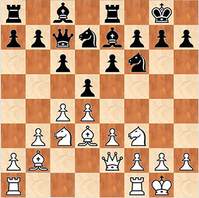
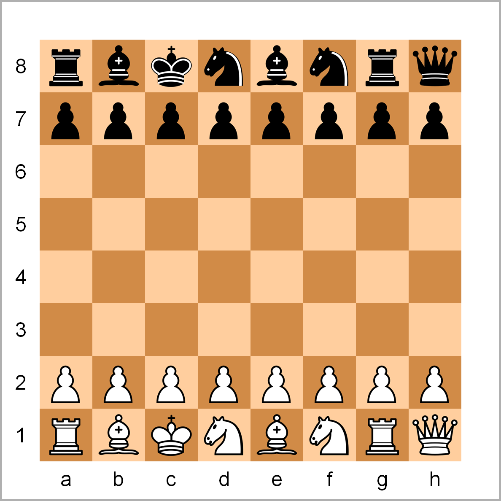
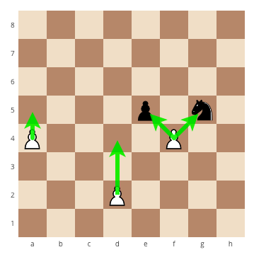
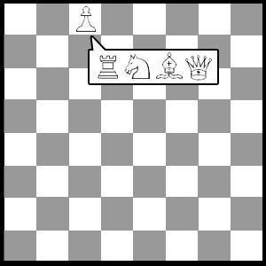
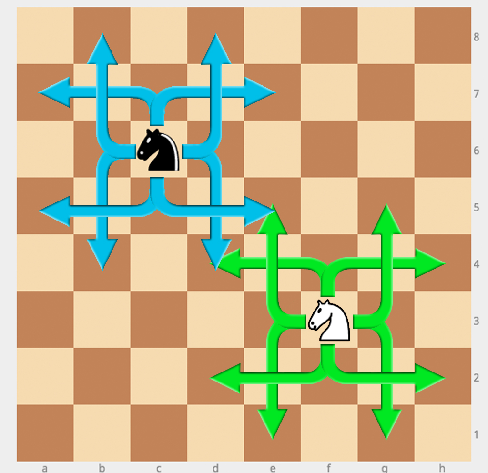
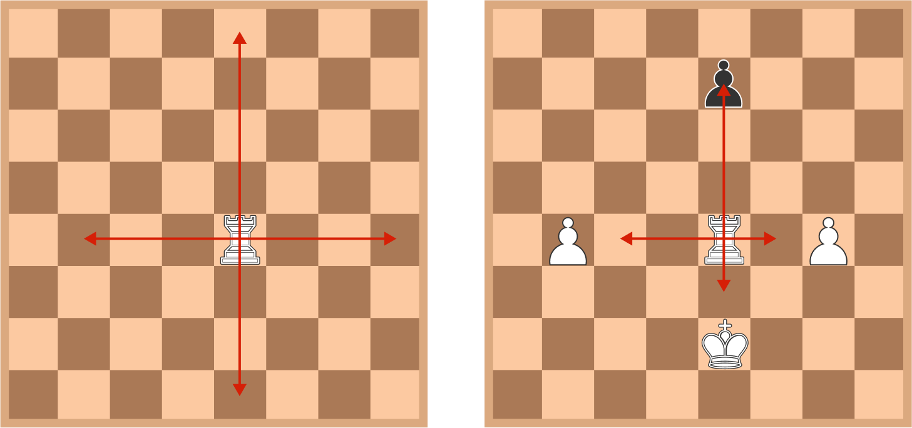
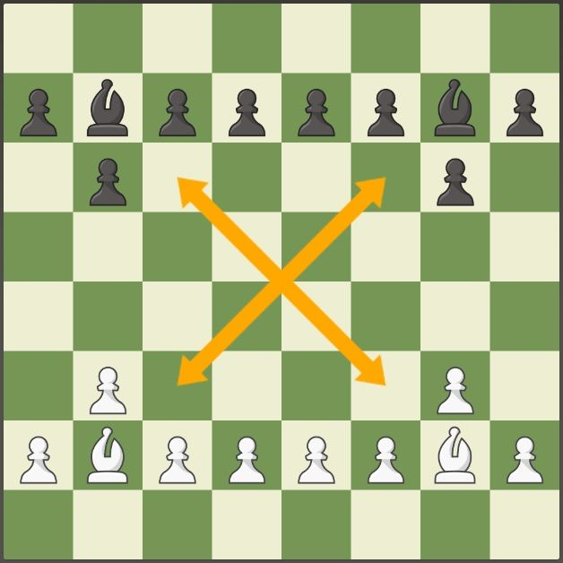
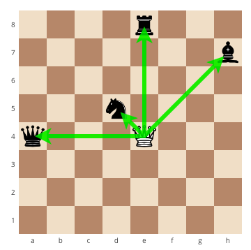
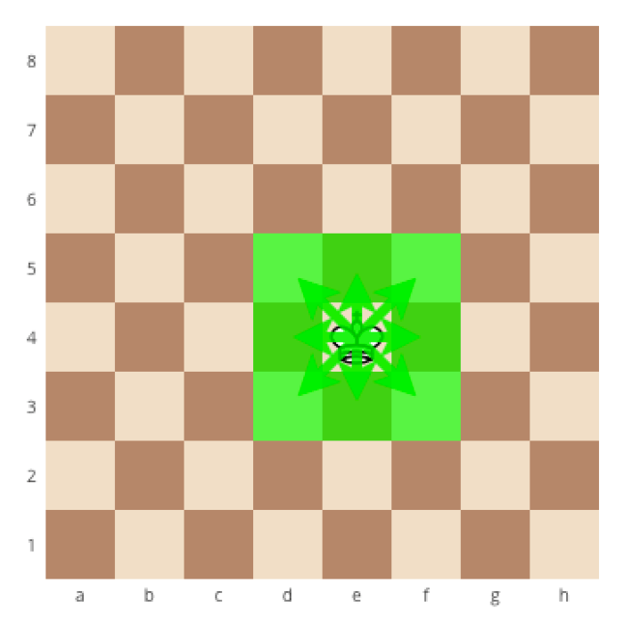
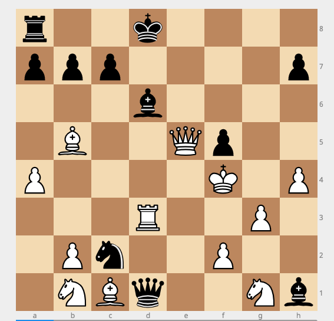

These are certain rules we need to follow if we want to play chess
with our friends and family. It is an amazing game which
helps developing organizational skills and develop tactics which anticipate
the moves of the opponent. There are n number of rules if we go deep within
the game but here I am going to discuss only the basic rules for beginners

Traditional Chess Board
Rule #1
Setup, turn and pieces
Setup:
The board is setup as shown. There should always be a white square at the closest right-hand side for both players. Remember that the queen must be on a square that matches her color.
Turns
White always moves first, and players alternate turns. Players can only move one piece at a time
Pieces
There are six types of pieces which can be used in the games. All of them have different
rules.

Traditional Chess Board
Rule #2
Pawn moments
Pawns only move forward. On the first move a pawn can move one or two spaces, every subsequent move can only be one space. Pawns move diagonally to take opponents.

Traditional Chess Board

Traditional Chess Board
Pawn Promotion
If a pawn reaches the opposite side of the board, it is promoted to a higher piece (except king). There is no limit to how many pawns can be promoted.
Rule #3
Knight
Movements:
Knights square measure the sole items that "jump" off the board.
Unlike alternative items square measure not blocked if there are items between them and their destination sq..
To make it easier to remember how a knight moves think of an L.
Two areas during a direction forward, backward or region, and one house at a right flip.

Traditional Chess Board
Rule #4
Rook
Movements:
Rook can move n number of steps in forward, backward, and sidewise.

Traditional Chess Board
Rule #5
Bishop
Movements:
Bishops move in continuous diagonal lines in any direction.

Traditional Chess Board
Rule #6
Queen
Movements:
Queen is piece with special moves. Queen can move continously
in any direction.

Traditional Chess Board
Rule #7
King
Movements:
King can move only one square at a time.

Traditional Chess Board
Rule #8
Check
A king is in check when an opponent's piece is in a position that can attack the king. A player must move their king out of check, block the check or capture the attacking piece.
A player cannot move their king into check.

Traditional Chess Board
Rule #9
Checkmate
Putting an opponent's king in "checkmate" is the only way to win the game.
A king is under controlmate if it's in check, the opponent's piece that has the king in check cannot be captured, the check cannot be blocked, and the
king cannot move to a sq. that's not under fire.
In the illustration the white queen has the black king in check, and all of the spaces where the king can move can be attacked by the queen.
The king cannot take the queen, as a result of the knight is protective the queen.
The black bishop cannot block the queen. This is checkmate.
Rule #10
Stalemate
Simply put, a "Stalemate" is a tie. It is achieved if there are no legal moves for a player to make.